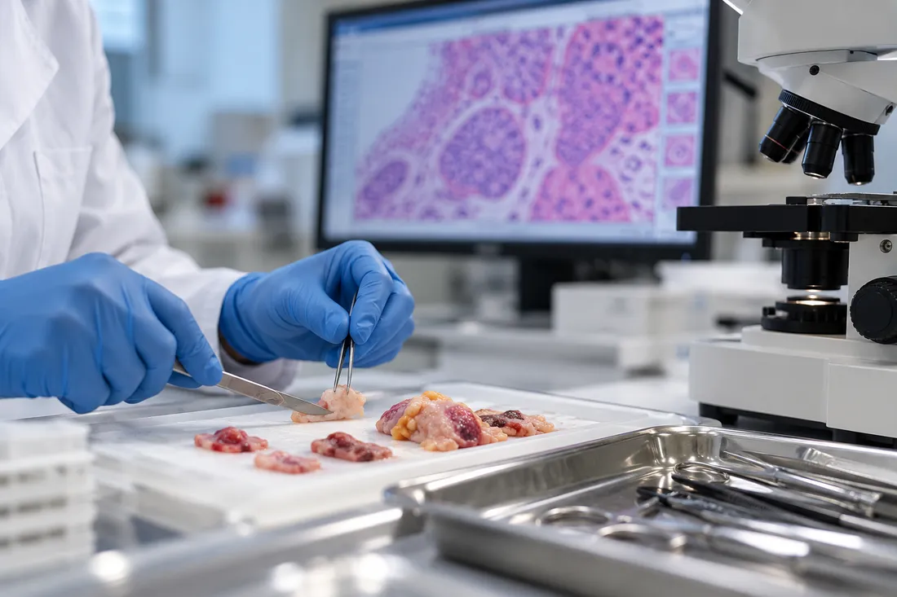

Specialized Expertise
Focused expertise in dermatopathology, podiatric pathology, and selected surgical pathology subspecialties.
Diagnostic pathology expertise
Specialized pathology services providing physicians with timely, reliable, and clinically meaningful diagnoses to support confident decisions and better patient care.
Why Benchmark Diagnostics
Focused expertise in dermatopathology, podiatric pathology, and selected surgical pathology subspecialties.
Thorough tissue evaluation and thoughtful interpretation to deliver clear, reliable, and clinically meaningful findings.
Direct physician-to-pathologist communication, timely reporting, and individualized support for referring providers.
Flexible histology and professional interpretation services to assist laboratories during staffing shortages or increased workloads.
Advancing pathology through research, scholarly publications, and continuing medical education.
Our Services
Evaluation of inflammatory, neoplastic, and other skin disorders, integrating histopathologic findings with relevant clinical information.
Learn MoreDiagnostic evaluation of skin, nail, and soft tissue disorders of the foot and lower extremity, supporting comprehensive podiatric care.
Learn More
Focused evaluation of biopsies and surgical specimens, including gastrointestinal, ophthalmic, and other selected surgical pathology cases.
Learn MorePhysician Resources
Explore our available histochemical stains, immunohistochemistry, and other ancillary diagnostic tests. Technical Component (TC)-only services are also available.
View Testing MenuBenchmark Diagnostics participates with major insurance carriers and regional health plans, including AultCare.
View Insurance ListConvenient specimen pickup, available by request or on a regularly scheduled basis to accommodate your practice's needs.
Request PickupFlexible Technical Component (TC) services, including tissue processing, embedding, microtomy, and staining, as well as Professional Component (PC) interpretation by experienced pathologists.
Explore TC/PC ServicesDirect access to our team for specimen inquiries, diagnostic consultations, and assistance with laboratory services.
Contact UsResearch & Publications
Laboratory Communications
Practical diagnostic insights, emerging concepts, and interesting clinical cases shared through The Lab Report and other educational communications.
Explore Laboratory CommunicationsPublication
Peer-reviewed research and scholarly articles contributing to the understanding of dermatopathology and related disciplines.
Explore PublicationsPresentation
Original observations and investigations exploring histopathologic patterns, disease mechanisms, and diagnostic concepts.
Explore Original InsightsBlogs
Commentaries and reflections on pathology, laboratory medicine, and evolving diagnostic practices.
Explore BlogsContact Benchmark Diagnostics
Whether you need diagnostic pathology services, physician consultation, or laboratory support, our team is ready to assist.
Contact Our Laboratory